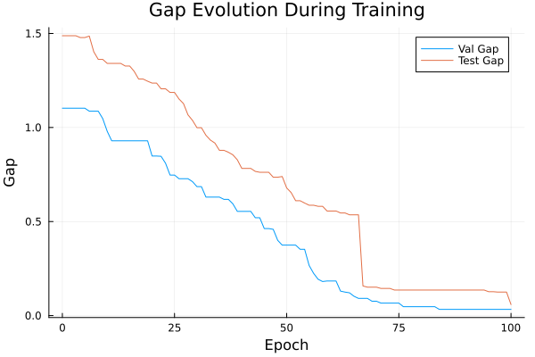
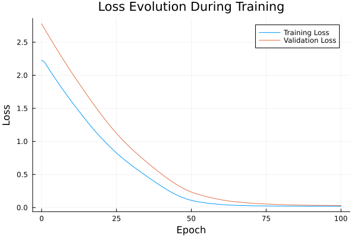

Basic Tutorial: Training with FYL on Argmax Benchmark
This tutorial demonstrates the basic workflow for training a policy using the Perturbed Fenchel-Young Loss algorithm.
Setup
using DecisionFocusedLearningAlgorithms
using DecisionFocusedLearningBenchmarks
using MLUtils: splitobs
using PlotsCreate Benchmark and Data
b = ArgmaxBenchmark()
dataset = generate_dataset(b, 100)
train_data, val_data, test_data = splitobs(dataset; at=(0.3, 0.3, 0.4))(DecisionFocusedLearningBenchmarks.Utils.DataSample{@NamedTuple{}, Matrix{Float32}, Vector{Float32}, Vector{Float32}}[DataSample(x=Float32[-0.445414 -0.331049 … 2.24305 0.232276; -0.797476 -1.50578 … 0.644884 0.179112; … ; -0.818548 -1.57601 … -0.657757 0.483306; 0.524891 -1.17893 … -0.935155 -0.111699], θ_true=Float32[-0.356119, 0.443387, -0.0733442, -0.92808, 1.14154, 1.93284, 0.93075, 1.89198, -0.058755, -1.10439], y_true=Float32[0.0, 0.0, 0.0, 0.0, 0.0, 1.0, 0.0, 0.0, 0.0, 0.0]), DataSample(x=Float32[-2.02294 0.0824437 … -0.0994353 -0.409621; 1.31961 -0.309777 … 0.30952 -0.697975; … ; -0.585383 -1.23049 … -0.674443 -1.35311; 0.832379 -1.25719 … 1.03452 -0.800365], θ_true=Float32[0.116557, 0.815816, 0.104768, 0.211168, -1.36797, -2.4742, -1.31274, -1.50116, -0.627907, 0.398158], y_true=Float32[0.0, 1.0, 0.0, 0.0, 0.0, 0.0, 0.0, 0.0, 0.0, 0.0]), DataSample(x=Float32[-0.234318 0.872925 … 0.207232 0.850864; 0.667465 -0.538366 … 0.748738 -1.32429; … ; -0.118721 -1.11485 … 0.305845 -0.638968; 0.330181 -1.14346 … 1.44374 -0.745001], θ_true=Float32[0.47905, 0.490491, 0.75126, -3.18921, -0.865804, -0.776229, -0.171032, -1.09509, -1.42739, 0.0731257], y_true=Float32[0.0, 0.0, 1.0, 0.0, 0.0, 0.0, 0.0, 0.0, 0.0, 0.0]), DataSample(x=Float32[1.1515 0.531875 … -2.20402 1.16675; -0.0806478 0.650266 … 0.437679 2.22889; … ; -0.716314 0.0393319 … -0.39334 -1.68222; -0.0868328 0.990211 … -1.43779 0.265279], θ_true=Float32[0.746356, 0.39325, 0.469859, 1.57406, -0.32063, 1.51021, -1.01373, 2.35048, 1.22225, 1.14985], y_true=Float32[0.0, 0.0, 0.0, 0.0, 0.0, 0.0, 0.0, 1.0, 0.0, 0.0]), DataSample(x=Float32[-1.54967 -0.870715 … -0.155911 0.367711; 0.409875 -0.0980742 … 0.0537868 -1.22873; … ; -1.79445 0.194611 … -1.74881 0.0646545; -0.63213 -0.692038 … 1.45792 -2.36554], θ_true=Float32[1.58824, -0.134481, -0.577466, 0.954529, 0.518585, 0.848603, -0.222185, 0.433724, 2.09872, -0.518313], y_true=Float32[0.0, 0.0, 0.0, 0.0, 0.0, 0.0, 0.0, 0.0, 1.0, 0.0]), DataSample(x=Float32[0.271244 0.467035 … -1.58906 -0.00344463; 1.65639 0.709896 … -0.123153 0.236466; … ; 0.142442 1.53424 … -0.418025 -0.192678; 0.418321 -1.20349 … -0.0210767 -0.485737], θ_true=Float32[-1.21268, -1.9047, 3.80015, 0.0475205, -2.21613, -0.16051, 0.900555, 0.13182, 0.625696, -0.424208], y_true=Float32[0.0, 0.0, 1.0, 0.0, 0.0, 0.0, 0.0, 0.0, 0.0, 0.0]), DataSample(x=Float32[-0.566746 1.37563 … 1.58226 -0.739449; 0.799737 0.136397 … 0.584643 1.06281; … ; 1.04259 -0.142831 … 0.557252 -0.589683; -0.0294183 -0.601475 … -0.121428 -0.0944173], θ_true=Float32[-1.22276, -0.125563, -1.35039, -0.259741, -0.530619, -0.299294, 1.65149, -0.825878, 0.116607, -0.151686], y_true=Float32[0.0, 0.0, 0.0, 0.0, 0.0, 0.0, 1.0, 0.0, 0.0, 0.0]), DataSample(x=Float32[1.07061 0.2821 … 1.46483 0.303841; -0.735779 -0.494381 … 1.75435 -1.05743; … ; 2.01784 0.480856 … -0.302006 -0.908199; -0.0605517 2.43805 … -0.795413 -0.485558], θ_true=Float32[-0.519612, 0.407652, -0.293242, 0.228469, 0.746385, 1.85831, 2.27507, -0.919418, -0.62939, 1.77747], y_true=Float32[0.0, 0.0, 0.0, 0.0, 0.0, 0.0, 1.0, 0.0, 0.0, 0.0]), DataSample(x=Float32[-2.3833 0.996277 … 1.41337 -2.0607; 0.728517 -0.00994373 … 1.1335 0.036372; … ; 0.543752 1.66834 … -0.81528 0.889964; -1.20984 -1.26307 … -0.512405 1.74657], θ_true=Float32[-0.995928, -0.828113, -0.083424, 1.52957, 0.220241, -0.894331, -0.596873, -1.38489, -0.126955, -0.705981], y_true=Float32[0.0, 0.0, 0.0, 1.0, 0.0, 0.0, 0.0, 0.0, 0.0, 0.0]), DataSample(x=Float32[1.52266 0.352187 … 0.431805 0.45029; 0.61695 -0.489798 … 0.261586 -1.81487; … ; -0.328222 1.94809 … -0.4799 -1.52007; -0.493899 2.50203 … -1.32182 -0.316485], θ_true=Float32[0.873701, -0.477719, 1.09894, -0.00578169, 0.425482, 1.23317, 0.522694, -0.640899, -0.317719, 1.26337], y_true=Float32[0.0, 0.0, 0.0, 0.0, 0.0, 0.0, 0.0, 0.0, 0.0, 1.0]) … DataSample(x=Float32[0.333887 -2.01987 … 0.516997 0.481241; 1.18612 -0.144379 … 0.0916513 0.471674; … ; -0.875964 -0.766157 … 0.350206 -0.0496535; 0.481567 0.569565 … -0.772574 0.684513], θ_true=Float32[0.231384, 1.30748, 0.0423156, -1.00699, -0.387627, 1.63813, 1.81144, -0.0540524, -0.810115, 0.0362834], y_true=Float32[0.0, 0.0, 0.0, 0.0, 0.0, 0.0, 1.0, 0.0, 0.0, 0.0]), DataSample(x=Float32[-0.979182 -0.78974 … -2.05892 -0.969016; 0.576152 0.057488 … -0.440748 -0.685886; … ; 0.609127 0.39533 … -1.0277 1.24181; -0.453651 -1.40806 … -0.599881 0.124757], θ_true=Float32[-0.954708, 0.182349, 3.65108, -0.467221, -1.30499, -0.730854, -0.0935423, 1.60306, 0.130298, -0.664565], y_true=Float32[0.0, 0.0, 1.0, 0.0, 0.0, 0.0, 0.0, 0.0, 0.0, 0.0]), DataSample(x=Float32[0.0737564 -0.81358 … -1.3263 1.00797; 1.34657 0.296738 … -0.576742 -1.37047; … ; 0.64039 1.06842 … 1.22992 0.563567; 0.176303 -1.86149 … 1.13862 -0.0429708], θ_true=Float32[-1.25542, -0.886503, -0.00719969, -0.910266, -0.353869, -0.0800951, 0.477167, 0.912205, 0.655888, 0.665123], y_true=Float32[0.0, 0.0, 0.0, 0.0, 0.0, 0.0, 0.0, 1.0, 0.0, 0.0]), DataSample(x=Float32[1.96958 1.00571 … -0.889893 0.062226; 2.34109 0.931395 … 0.649612 -0.0290768; … ; 0.366154 -1.20639 … -0.0447451 -0.515431; -0.555219 -0.0970684 … 1.43289 0.256647], θ_true=Float32[-0.646113, 0.318377, 0.629856, 0.157073, 0.351456, 2.07825, 0.354857, 0.899506, 1.43895, -0.614098], y_true=Float32[0.0, 0.0, 0.0, 0.0, 0.0, 1.0, 0.0, 0.0, 0.0, 0.0]), DataSample(x=Float32[0.382044 -0.549734 … 2.0343 -0.728474; 2.11951 -0.198311 … 0.643926 -0.0814212; … ; 0.298006 -1.48944 … -0.611556 -0.683735; 0.677528 -1.69926 … 0.650794 -0.0314933], θ_true=Float32[0.126004, -1.10433, 0.333033, -1.36942, -2.3304, -0.442098, -0.641046, -0.09553, 1.61243, 0.409182], y_true=Float32[0.0, 0.0, 0.0, 0.0, 0.0, 0.0, 0.0, 0.0, 1.0, 0.0]), DataSample(x=Float32[0.673082 0.873689 … 0.875832 0.943308; 1.02403 -0.47015 … -0.28803 1.47228; … ; -0.937906 0.3812 … 0.807602 0.100519; -1.96824 -0.126186 … 1.14239 -0.866968], θ_true=Float32[0.614273, 0.9426, 1.7076, -0.54026, -0.293465, 1.82981, 0.827306, -0.0348775, -1.29622, -0.690991], y_true=Float32[0.0, 0.0, 0.0, 0.0, 0.0, 1.0, 0.0, 0.0, 0.0, 0.0]), DataSample(x=Float32[0.624239 -0.449725 … -1.90818 0.840297; -1.19303 0.728162 … 0.782643 0.135776; … ; 1.17074 0.705541 … 0.803404 -2.10701; 0.280847 0.249758 … 0.834598 -0.285014], θ_true=Float32[-0.0956011, -0.616412, -1.16447, -0.824777, 1.63151, 1.35872, -0.506346, 0.348155, -0.547406, 1.87631], y_true=Float32[0.0, 0.0, 0.0, 0.0, 0.0, 0.0, 0.0, 0.0, 0.0, 1.0]), DataSample(x=Float32[-0.448397 -0.623873 … -0.0774744 -1.44088; -1.2144 -0.473992 … 0.281974 -1.53314; … ; -1.09258 -0.701665 … -2.14153 -1.23219; -1.06184 0.75298 … -0.389394 -1.16622], θ_true=Float32[0.919526, 1.16943, 0.246491, -0.911962, 0.359368, 1.44453, 0.00700116, 0.255976, 2.08315, 1.0199], y_true=Float32[0.0, 0.0, 0.0, 0.0, 0.0, 0.0, 0.0, 0.0, 1.0, 0.0]), DataSample(x=Float32[-0.366485 0.589341 … 0.908171 -0.272484; -0.730752 -0.0372145 … 0.03156 0.739655; … ; -0.148091 -0.910913 … 0.503073 0.0407005; 1.98584 1.54752 … 0.518703 -0.130309], θ_true=Float32[0.963198, 0.96646, 0.499816, 0.106769, 0.722443, -0.441139, -0.00737851, 0.534543, 0.10698, -0.394511], y_true=Float32[0.0, 1.0, 0.0, 0.0, 0.0, 0.0, 0.0, 0.0, 0.0, 0.0]), DataSample(x=Float32[0.767742 -1.9522 … 1.97621 -0.775768; 0.252852 -1.14564 … 0.645991 -1.85429; … ; 2.01065 -0.392034 … 0.502164 -0.649592; 0.435162 0.0894008 … -0.714393 0.829293], θ_true=Float32[-1.55421, -0.543179, -1.13693, -0.251309, 0.566028, -1.21759, -1.10874, 0.219499, 0.0983446, 1.49949], y_true=Float32[0.0, 0.0, 0.0, 0.0, 0.0, 0.0, 0.0, 0.0, 0.0, 1.0])], DecisionFocusedLearningBenchmarks.Utils.DataSample{@NamedTuple{}, Matrix{Float32}, Vector{Float32}, Vector{Float32}}[DataSample(x=Float32[0.415956 -2.13626 … -0.38899 -0.494337; -0.321299 -0.772828 … 0.0487591 -1.71806; … ; -0.797961 -1.50517 … 1.30924 0.425137; 0.111215 0.392376 … 0.374404 -1.03284], θ_true=Float32[0.923462, 1.20247, 1.74229, 0.587928, 0.573278, -0.39206, -1.09268, 0.35706, -0.301036, -0.825294], y_true=Float32[0.0, 0.0, 1.0, 0.0, 0.0, 0.0, 0.0, 0.0, 0.0, 0.0]), DataSample(x=Float32[1.05643 0.0516201 … 1.06336 -2.47577; 1.47388 0.335903 … -1.54197 1.28407; … ; 1.09604 0.199893 … -1.13125 0.627544; -1.64474 1.13866 … -0.172709 -0.562223], θ_true=Float32[-2.5427, -0.929587, -0.927987, 0.627007, 0.319909, -1.95371, -0.334674, 0.402602, 1.39475, -2.21801], y_true=Float32[0.0, 0.0, 0.0, 0.0, 0.0, 0.0, 0.0, 0.0, 1.0, 0.0]), DataSample(x=Float32[-0.678195 -0.630959 … 0.327653 -0.962201; 0.467803 -1.97046 … 1.03496 2.15477; … ; 1.30589 -1.95601 … -2.62282 -1.24839; -2.57052 -0.505067 … -1.66955 -0.0177262], θ_true=Float32[-1.68891, 1.57285, 1.41229, -2.09435, 0.132501, 0.215404, 0.773863, -0.826847, 0.678906, 0.286105], y_true=Float32[0.0, 1.0, 0.0, 0.0, 0.0, 0.0, 0.0, 0.0, 0.0, 0.0]), DataSample(x=Float32[0.798845 -0.174768 … -0.50719 -0.384123; 0.177753 0.479968 … 0.186955 1.23351; … ; -0.711057 -0.979976 … 1.11079 1.29393; 0.926849 1.43678 … -0.499031 -0.223351], θ_true=Float32[1.96904, 1.31943, -0.952779, 0.676109, 0.571882, 1.63039, 0.328573, 1.73912, -1.64233, -1.16816], y_true=Float32[1.0, 0.0, 0.0, 0.0, 0.0, 0.0, 0.0, 0.0, 0.0, 0.0]), DataSample(x=Float32[-0.785218 0.802063 … -0.303116 0.632032; 2.27762 -0.672862 … 0.39521 0.697072; … ; 1.59703 -1.13894 … -0.0387111 1.47589; 2.23305 0.481641 … 1.14312 -0.902092], θ_true=Float32[-2.09555, 1.73291, -1.62441, 0.353056, -2.47009, 1.87112, 2.20931, 0.173862, -1.03173, -1.60219], y_true=Float32[0.0, 0.0, 0.0, 0.0, 0.0, 0.0, 1.0, 0.0, 0.0, 0.0]), DataSample(x=Float32[0.379655 -1.81896 … -0.369767 -0.496702; 0.0386692 0.432566 … -1.06812 1.16598; … ; -0.664079 0.183979 … 0.414135 0.996476; 0.0534351 0.534231 … -1.67929 0.650552], θ_true=Float32[1.60281, -0.731802, -2.28443, -0.630011, 2.59086, 1.77364, -0.481611, 0.719098, -0.909043, -0.8316], y_true=Float32[0.0, 0.0, 0.0, 0.0, 1.0, 0.0, 0.0, 0.0, 0.0, 0.0]), DataSample(x=Float32[1.5792 0.387861 … -0.220387 0.00770979; 1.43667 -0.168172 … -0.553399 0.450392; … ; -0.194002 2.47154 … 0.951501 -0.231826; -0.764793 0.0739777 … -0.0440186 1.1544], θ_true=Float32[0.538012, -3.13083, -1.40106, -1.04419, 0.418354, -0.410795, 0.835062, -0.89115, -0.108194, 0.222162], y_true=Float32[0.0, 0.0, 0.0, 0.0, 0.0, 0.0, 1.0, 0.0, 0.0, 0.0]), DataSample(x=Float32[1.34069 1.05498 … 0.624442 -0.177039; -0.841278 -0.784533 … -0.22981 -0.921563; … ; 1.60094 0.451991 … 0.413515 1.52873; 2.63846 -0.832833 … 0.572439 0.229829], θ_true=Float32[0.188278, 0.300023, -1.24973, -1.15437, 0.120746, -0.232982, 1.41619, -1.12884, 0.356765, -1.20374], y_true=Float32[0.0, 0.0, 0.0, 0.0, 0.0, 0.0, 1.0, 0.0, 0.0, 0.0]), DataSample(x=Float32[1.32157 -1.25886 … 0.67232 1.6054; 1.16406 -0.889546 … 0.455041 1.02971; … ; 1.306 0.365332 … -2.17017 -0.748843; 0.409138 0.225754 … 0.59969 -0.067456], θ_true=Float32[-1.59227, 0.169956, -0.461491, -0.275012, 1.37044, -2.27715, 0.341094, -1.22018, 1.2679, -0.713236], y_true=Float32[0.0, 0.0, 0.0, 0.0, 1.0, 0.0, 0.0, 0.0, 0.0, 0.0]), DataSample(x=Float32[-0.0138593 0.229627 … -0.25782 -0.119236; -1.23297 0.660519 … -0.0175258 -1.46208; … ; -1.92625 -0.672525 … 0.717761 0.0633405; 0.393399 0.885111 … 1.46083 1.18967], θ_true=Float32[1.14488, 0.939865, -0.384494, 1.33522, -1.80587, 0.907553, 1.6306, 2.04733, -0.0544204, 0.72783], y_true=Float32[0.0, 0.0, 0.0, 0.0, 0.0, 0.0, 0.0, 1.0, 0.0, 0.0]) … DataSample(x=Float32[0.342635 1.77404 … -0.404227 -0.476926; 0.354328 -0.144369 … -0.130688 -0.183467; … ; -0.687075 -0.881373 … -0.381136 0.444489; -0.487471 -1.05607 … 0.326794 1.05599], θ_true=Float32[0.908303, 0.92741, -1.37362, 0.789509, -0.441719, 0.057331, 1.65483, -0.214492, 0.362378, -0.800972], y_true=Float32[0.0, 0.0, 0.0, 0.0, 0.0, 0.0, 1.0, 0.0, 0.0, 0.0]), DataSample(x=Float32[-0.294771 -0.176799 … 0.436799 -0.582079; 0.301647 1.2531 … 1.12371 0.537386; … ; 0.539139 0.699949 … 0.847688 -0.566058; 1.63049 0.0230736 … -1.45422 0.527888], θ_true=Float32[-1.06082, -1.10895, 0.238857, 2.02287, 0.812885, 1.43892, 0.397641, -0.625671, -1.116, 0.74322], y_true=Float32[0.0, 0.0, 0.0, 1.0, 0.0, 0.0, 0.0, 0.0, 0.0, 0.0]), DataSample(x=Float32[0.709547 -0.801549 … -0.439293 -0.954725; -1.35578 -0.707371 … 0.278158 0.573368; … ; -1.43378 0.0462971 … 1.51429 -0.315879; 0.522843 0.164952 … 1.39454 0.237009], θ_true=Float32[2.50905, 2.15536, 3.04843, -0.980085, 0.360043, 0.733842, -0.693567, -0.55293, -0.417503, -0.386516], y_true=Float32[0.0, 0.0, 1.0, 0.0, 0.0, 0.0, 0.0, 0.0, 0.0, 0.0]), DataSample(x=Float32[-1.82041 -1.49808 … -0.419182 -1.10054; -0.214728 0.356637 … -0.236965 0.103393; … ; -0.124114 1.24913 … 2.05961 2.38185; -0.151381 -0.365984 … -0.991307 -0.117936], θ_true=Float32[-0.328371, -3.03648, -1.64956, -0.29563, -1.09203, -1.8561, 0.61987, -0.381743, -1.3839, -1.80599], y_true=Float32[0.0, 0.0, 0.0, 0.0, 0.0, 0.0, 1.0, 0.0, 0.0, 0.0]), DataSample(x=Float32[0.230063 1.57095 … 0.83489 -0.358537; 0.453251 0.27934 … 0.0385687 1.66602; … ; 0.633837 -0.238871 … 0.453414 0.48894; -1.94137 -0.839181 … 1.48443 0.673953], θ_true=Float32[-1.44522, 0.105999, -0.0424625, -0.884494, -0.225917, -0.0566528, 0.731861, 0.0577571, 0.789904, -1.62636], y_true=Float32[0.0, 0.0, 0.0, 0.0, 0.0, 0.0, 0.0, 0.0, 1.0, 0.0]), DataSample(x=Float32[0.277456 0.632535 … 1.6037 0.854656; -0.287228 -0.907551 … -0.530042 0.845306; … ; 1.05217 0.196749 … -0.47947 -0.339758; -0.580622 0.862708 … 0.394287 0.961116], θ_true=Float32[-1.23315, 0.554397, -1.17683, 0.949108, -0.132595, 1.24707, 1.10481, 2.1142, 0.370485, 0.506768], y_true=Float32[0.0, 0.0, 0.0, 0.0, 0.0, 0.0, 0.0, 1.0, 0.0, 0.0]), DataSample(x=Float32[-0.706077 0.780693 … -0.897144 1.94407; 2.16967 -1.6513 … -1.01852 1.00705; … ; -0.0351616 -0.149024 … -0.569805 -0.194331; -0.429627 -1.31153 … 0.201502 0.190914], θ_true=Float32[-1.65385, 0.154302, 0.863957, 0.192469, -1.41003, 0.0573119, -1.37201, 0.0334996, -0.0101355, 1.73609], y_true=Float32[0.0, 0.0, 0.0, 0.0, 0.0, 0.0, 0.0, 0.0, 0.0, 1.0]), DataSample(x=Float32[-1.00332 -1.20171 … 0.587675 0.288754; -1.01514 0.836389 … 0.364893 0.250488; … ; 0.408322 0.0158571 … 1.42377 -1.40907; 0.503734 -1.89122 … -0.390134 -0.205], θ_true=Float32[0.568311, -1.98729, 0.328461, 0.584421, 0.902798, -1.11693, -0.808325, 1.11257, -0.0824302, 1.41015], y_true=Float32[0.0, 0.0, 0.0, 0.0, 0.0, 0.0, 0.0, 0.0, 0.0, 1.0]), DataSample(x=Float32[2.32353 -0.969233 … 1.23641 0.500828; 1.22391 0.073152 … 1.21825 -0.332476; … ; -0.608385 -2.27253 … 2.00073 -0.0612938; 0.744318 0.597316 … 0.0146522 -1.4361], θ_true=Float32[-0.58821, 1.56111, -0.154252, 0.638425, -1.89496, 1.08313, 1.5762, 0.718313, -2.52769, -0.826963], y_true=Float32[0.0, 0.0, 0.0, 0.0, 0.0, 0.0, 1.0, 0.0, 0.0, 0.0]), DataSample(x=Float32[-0.364807 -0.105013 … 0.168597 0.960521; 0.176986 -0.561016 … -0.589718 0.111864; … ; 0.423318 -0.514638 … 0.0509544 0.812979; 0.607649 -0.0742424 … -0.711762 -1.34293], θ_true=Float32[-0.819112, -0.270158, 0.0458167, -0.735559, -1.47037, -0.756611, 0.592677, -0.223406, 0.861851, -0.0519057], y_true=Float32[0.0, 0.0, 0.0, 0.0, 0.0, 0.0, 0.0, 0.0, 1.0, 0.0])], DecisionFocusedLearningBenchmarks.Utils.DataSample{@NamedTuple{}, Matrix{Float32}, Vector{Float32}, Vector{Float32}}[DataSample(x=Float32[2.50238 -0.414184 … 0.699685 0.839256; 0.438838 0.269217 … -0.462794 -0.940615; … ; -0.487161 -0.387535 … -0.169042 1.01319; 1.03561 0.109162 … -0.624716 1.88633], θ_true=Float32[0.972217, 0.670426, -1.40024, -1.27263, -0.491839, 2.47744, -1.19365, 0.686686, 1.65518, 0.00805932], y_true=Float32[0.0, 0.0, 0.0, 0.0, 0.0, 1.0, 0.0, 0.0, 0.0, 0.0]), DataSample(x=Float32[-0.00143451 -1.61206 … 0.251109 -0.374911; 0.476217 0.0221475 … 0.542244 1.28306; … ; -1.81844 -0.339262 … -0.64649 0.00125015; 0.0961679 0.239582 … -0.226916 0.853527], θ_true=Float32[1.95543, -0.458039, -0.718916, -0.00270393, -0.652692, 3.25401, -0.285144, -0.590759, -0.560891, -0.197475], y_true=Float32[0.0, 0.0, 0.0, 0.0, 0.0, 1.0, 0.0, 0.0, 0.0, 0.0]), DataSample(x=Float32[1.41325 -0.43481 … -1.1287 -1.27995; 0.959518 1.43216 … -0.69049 -1.67981; … ; 0.0238259 -0.59964 … 0.840499 -1.72702; 1.43289 1.29748 … -1.13118 -1.53316], θ_true=Float32[-0.486059, -0.248463, 0.79842, 1.30633, 1.07215, -1.99444, -0.503223, 0.104317, -2.05063, 1.61309], y_true=Float32[0.0, 0.0, 0.0, 0.0, 0.0, 0.0, 0.0, 0.0, 0.0, 1.0]), DataSample(x=Float32[-0.686911 0.447462 … -0.944417 -0.882109; 1.55321 0.692127 … -0.689026 0.773893; … ; -1.20363 -0.0322473 … 2.00709 -0.59482; 0.100807 0.601407 … -0.927025 -0.583857], θ_true=Float32[1.23744, 0.566448, 1.86142, -1.04454, 0.572165, -0.664806, -0.726597, -1.51992, -1.98223, 0.0997258], y_true=Float32[0.0, 0.0, 1.0, 0.0, 0.0, 0.0, 0.0, 0.0, 0.0, 0.0]), DataSample(x=Float32[-0.332656 -0.826709 … -0.129029 -0.346699; -1.92747 -0.788426 … -0.129898 0.126182; … ; -0.206465 0.85629 … 0.348891 0.0119703; 1.88281 1.53701 … 1.47047 -1.85681], θ_true=Float32[0.531198, -0.213903, 1.12313, 0.110192, -0.296648, -1.92437, 0.00572909, 0.375298, -1.45322, -0.417059], y_true=Float32[0.0, 0.0, 1.0, 0.0, 0.0, 0.0, 0.0, 0.0, 0.0, 0.0]), DataSample(x=Float32[1.3669 -0.0394034 … -0.55095 0.0765524; -0.812032 0.00919821 … 0.722465 -0.206997; … ; -0.467336 2.55353 … -0.233163 0.2008; 0.564241 0.730001 … -1.02172 1.10381], θ_true=Float32[1.14491, -2.0962, -0.389942, 1.13479, 0.518191, 0.543065, -0.638808, 0.31175, -0.5172, 0.683753], y_true=Float32[1.0, 0.0, 0.0, 0.0, 0.0, 0.0, 0.0, 0.0, 0.0, 0.0]), DataSample(x=Float32[0.756365 -0.224969 … 0.111894 -0.6857; -0.370596 -0.531866 … -0.959243 0.828084; … ; 0.757168 -0.335986 … 0.419609 -0.850549; 0.0859495 -0.0777031 … 0.362512 1.54746], θ_true=Float32[0.351508, 0.272336, 0.122493, 1.13042, -1.25749, -0.1571, -0.250985, -2.90675, 0.233842, 0.959545], y_true=Float32[0.0, 0.0, 0.0, 1.0, 0.0, 0.0, 0.0, 0.0, 0.0, 0.0]), DataSample(x=Float32[2.96141 0.0311321 … 0.368102 0.883516; 0.819268 0.886756 … -0.827511 0.906477; … ; -0.669925 1.08973 … 0.124229 0.5563; -0.267786 -0.383731 … -1.08109 -1.02283], θ_true=Float32[-1.25756, -1.99382, -0.0318296, -1.72088, -0.321836, -0.982272, -0.482108, 0.0688872, -0.12182, -0.21473], y_true=Float32[0.0, 0.0, 0.0, 0.0, 0.0, 0.0, 0.0, 1.0, 0.0, 0.0]), DataSample(x=Float32[-0.0133131 0.586764 … 0.341418 0.814439; -0.313281 -0.645635 … 1.10703 1.43424; … ; -0.470582 -0.729402 … 1.24899 -0.685057; -0.928613 1.33154 … -1.23824 -1.93581], θ_true=Float32[-0.610605, 0.0507774, -2.51984, 0.591448, -0.0257407, -0.208062, -1.14911, 1.20238, -2.95886, -0.103614], y_true=Float32[0.0, 0.0, 0.0, 0.0, 0.0, 0.0, 0.0, 1.0, 0.0, 0.0]), DataSample(x=Float32[0.923548 0.345206 … -1.16298 0.236929; 0.753071 1.05167 … -1.16919 0.967464; … ; 1.59068 -0.288272 … -0.590628 -0.375771; -1.06216 0.591427 … -1.16899 -0.528161], θ_true=Float32[-2.09595, 0.125146, 0.650931, 2.35887, 2.00092, -0.876233, 2.32026, -0.114431, 1.38886, -0.44366], y_true=Float32[0.0, 0.0, 0.0, 1.0, 0.0, 0.0, 0.0, 0.0, 0.0, 0.0]) … DataSample(x=Float32[-0.558675 -0.914469 … -0.167113 1.08663; -0.378872 -0.139677 … 0.455243 0.823237; … ; 0.285482 0.741118 … 0.0564463 -1.39964; -0.713034 -1.10757 … -0.545012 -1.08665], θ_true=Float32[-0.630198, -1.49029, -0.0277163, 2.0503, -0.907084, -0.979776, -1.31029, 0.388387, -0.222999, 1.03934], y_true=Float32[0.0, 0.0, 0.0, 1.0, 0.0, 0.0, 0.0, 0.0, 0.0, 0.0]), DataSample(x=Float32[-2.52489 -0.236245 … 1.05852 0.431286; 0.246586 1.9824 … 1.31138 -0.0910747; … ; 1.20021 0.570045 … 0.962266 0.0691303; 0.0153082 0.8163 … -0.59836 2.10545], θ_true=Float32[-1.95817, -1.67467, -1.43295, -0.965798, 0.000920417, -0.255807, 1.34402, -0.416822, -1.09904, 0.800473], y_true=Float32[0.0, 0.0, 0.0, 0.0, 0.0, 0.0, 1.0, 0.0, 0.0, 0.0]), DataSample(x=Float32[0.766773 1.23661 … -0.491121 2.09279; 0.489334 -0.453186 … 1.02626 -0.361376; … ; -1.44269 0.847793 … -1.01563 0.633969; -0.102823 0.0650468 … 0.27156 0.120267], θ_true=Float32[0.819593, 0.113386, 0.0263336, -1.15127, -1.29947, 0.504066, -1.95897, 0.00772317, -0.171902, 1.26184], y_true=Float32[0.0, 0.0, 0.0, 0.0, 0.0, 0.0, 0.0, 0.0, 0.0, 1.0]), DataSample(x=Float32[0.138267 -0.567427 … -0.487891 1.65407; -1.44459 -0.533771 … -0.95552 -1.25862; … ; -0.821425 -0.674838 … 0.388454 -0.229286; -0.872115 0.0283696 … 0.22809 0.916839], θ_true=Float32[2.31456, 1.49668, -1.44707, 1.79334, -0.29257, 1.51664, 2.07597, 1.60193, -1.42828, 2.72805], y_true=Float32[0.0, 0.0, 0.0, 0.0, 0.0, 0.0, 0.0, 0.0, 0.0, 1.0]), DataSample(x=Float32[-0.258382 -0.543899 … 1.12324 0.564893; 0.668657 0.694842 … 0.748819 -1.10852; … ; -1.35709 -0.30726 … -0.692084 0.201684; 2.00803 -2.49743 … 1.62365 -0.377784], θ_true=Float32[1.98591, -1.05196, 0.302486, -1.59215, 0.617064, 1.45684, 1.25463, 1.30984, -0.128137, 1.66185], y_true=Float32[1.0, 0.0, 0.0, 0.0, 0.0, 0.0, 0.0, 0.0, 0.0, 0.0]), DataSample(x=Float32[-0.968223 -0.488574 … 1.50681 -2.00357; 0.340402 0.289877 … 1.01463 1.39395; … ; 2.19731 0.163482 … -1.64094 -0.579696; -0.150406 -1.50136 … 2.5115 0.237768], θ_true=Float32[-2.38208, -1.14316, 1.86161, 0.0779694, -2.53851, 1.12611, 1.19465, 2.20694, 2.43438, -0.881532], y_true=Float32[0.0, 0.0, 0.0, 0.0, 0.0, 0.0, 0.0, 0.0, 1.0, 0.0]), DataSample(x=Float32[2.54003 1.17525 … 0.444854 0.186287; 1.21705 0.594704 … -0.298017 0.962823; … ; 0.977372 -1.01637 … 0.0284196 0.992059; 0.84254 0.398205 … -2.59438 1.80134], θ_true=Float32[-1.06875, 0.801682, -0.51065, 1.31998, -3.33054, -0.411222, -2.70604, -0.707225, -0.69539, -0.776501], y_true=Float32[0.0, 0.0, 0.0, 1.0, 0.0, 0.0, 0.0, 0.0, 0.0, 0.0]), DataSample(x=Float32[1.42862 -0.0195002 … -2.76626 1.24429; 0.461039 -2.2392 … 1.07568 -2.3238; … ; -0.357316 -0.781134 … -0.192383 -0.82586; 1.63396 0.761681 … -0.797275 0.0245524], θ_true=Float32[0.334593, 1.05892, 1.6365, -0.576145, -0.397116, 0.476282, -0.321683, -0.476153, -0.716168, 1.8216], y_true=Float32[0.0, 0.0, 0.0, 0.0, 0.0, 0.0, 0.0, 0.0, 0.0, 1.0]), DataSample(x=Float32[1.02122 0.767771 … 1.02377 0.122989; -1.19694 0.489611 … 0.00786455 -0.282516; … ; -2.1101 0.0276073 … 0.306903 -0.000338121; 0.986602 0.30262 … -0.814912 -0.00158439], θ_true=Float32[2.25124, 0.240394, -1.86738, -0.285675, 1.3394, -0.0853135, -0.302315, -0.656267, -2.01258, -0.190114], y_true=Float32[1.0, 0.0, 0.0, 0.0, 0.0, 0.0, 0.0, 0.0, 0.0, 0.0]), DataSample(x=Float32[1.87662 -0.639274 … -0.0688823 1.34763; 0.241866 1.58158 … 0.951672 0.145519; … ; 0.799237 -0.404172 … -0.0331031 -1.3319; -0.567307 -0.189313 … -1.90454 -0.113583], θ_true=Float32[-0.911514, -0.474666, 0.691107, -1.4524, 0.2594, -0.862771, 1.62145, 1.89836, -0.548086, 0.991476], y_true=Float32[0.0, 0.0, 0.0, 0.0, 0.0, 0.0, 0.0, 1.0, 0.0, 0.0])], DecisionFocusedLearningBenchmarks.Utils.DataSample{@NamedTuple{}, Matrix{Float32}, Vector{Float32}, Vector{Float32}}[])Create Policy
model = generate_statistical_model(b; seed=0)
maximizer = generate_maximizer(b)
policy = DFLPolicy(model, maximizer)DFLPolicy{Flux.Chain{Tuple{Flux.Dense{typeof(identity), Matrix{Float32}, Bool}, typeof(vec)}}, typeof(DecisionFocusedLearningBenchmarks.Argmax.one_hot_argmax)}(Chain(Dense(5 => 1; bias=false), vec), DecisionFocusedLearningBenchmarks.Argmax.one_hot_argmax)Configure Algorithm
algorithm = PerturbedFenchelYoungLossImitation(;
nb_samples=10, ε=0.1, threaded=true, seed=0
)PerturbedFenchelYoungLossImitation{Optimisers.Adam{Float64, Tuple{Float64, Float64}, Float64}, Int64}(10, 0.1, true, Optimisers.Adam(eta=0.001, beta=(0.9, 0.999), epsilon=1.0e-8), 0, false)Define Metrics to track during training
validation_loss_metric = FYLLossMetric(val_data, :validation_loss)
val_gap_metric = FunctionMetric(:val_gap, val_data) do ctx, data
compute_gap(b, data, ctx.policy.statistical_model, ctx.policy.maximizer)
end
test_gap_metric = FunctionMetric(:test_gap, test_data) do ctx, data
compute_gap(b, data, ctx.policy.statistical_model, ctx.policy.maximizer)
end
metrics = (validation_loss_metric, val_gap_metric, test_gap_metric)(FYLLossMetric{SubArray{DecisionFocusedLearningBenchmarks.Utils.DataSample{@NamedTuple{}, Matrix{Float32}, Vector{Float32}, Vector{Float32}}, 1, Vector{DecisionFocusedLearningBenchmarks.Utils.DataSample{@NamedTuple{}, Matrix{Float32}, Vector{Float32}, Vector{Float32}}}, Tuple{UnitRange{Int64}}, true}}(DecisionFocusedLearningBenchmarks.Utils.DataSample{@NamedTuple{}, Matrix{Float32}, Vector{Float32}, Vector{Float32}}[DataSample(x=Float32[0.415956 -2.13626 … -0.38899 -0.494337; -0.321299 -0.772828 … 0.0487591 -1.71806; … ; -0.797961 -1.50517 … 1.30924 0.425137; 0.111215 0.392376 … 0.374404 -1.03284], θ_true=Float32[0.923462, 1.20247, 1.74229, 0.587928, 0.573278, -0.39206, -1.09268, 0.35706, -0.301036, -0.825294], y_true=Float32[0.0, 0.0, 1.0, 0.0, 0.0, 0.0, 0.0, 0.0, 0.0, 0.0]), DataSample(x=Float32[1.05643 0.0516201 … 1.06336 -2.47577; 1.47388 0.335903 … -1.54197 1.28407; … ; 1.09604 0.199893 … -1.13125 0.627544; -1.64474 1.13866 … -0.172709 -0.562223], θ_true=Float32[-2.5427, -0.929587, -0.927987, 0.627007, 0.319909, -1.95371, -0.334674, 0.402602, 1.39475, -2.21801], y_true=Float32[0.0, 0.0, 0.0, 0.0, 0.0, 0.0, 0.0, 0.0, 1.0, 0.0]), DataSample(x=Float32[-0.678195 -0.630959 … 0.327653 -0.962201; 0.467803 -1.97046 … 1.03496 2.15477; … ; 1.30589 -1.95601 … -2.62282 -1.24839; -2.57052 -0.505067 … -1.66955 -0.0177262], θ_true=Float32[-1.68891, 1.57285, 1.41229, -2.09435, 0.132501, 0.215404, 0.773863, -0.826847, 0.678906, 0.286105], y_true=Float32[0.0, 1.0, 0.0, 0.0, 0.0, 0.0, 0.0, 0.0, 0.0, 0.0]), DataSample(x=Float32[0.798845 -0.174768 … -0.50719 -0.384123; 0.177753 0.479968 … 0.186955 1.23351; … ; -0.711057 -0.979976 … 1.11079 1.29393; 0.926849 1.43678 … -0.499031 -0.223351], θ_true=Float32[1.96904, 1.31943, -0.952779, 0.676109, 0.571882, 1.63039, 0.328573, 1.73912, -1.64233, -1.16816], y_true=Float32[1.0, 0.0, 0.0, 0.0, 0.0, 0.0, 0.0, 0.0, 0.0, 0.0]), DataSample(x=Float32[-0.785218 0.802063 … -0.303116 0.632032; 2.27762 -0.672862 … 0.39521 0.697072; … ; 1.59703 -1.13894 … -0.0387111 1.47589; 2.23305 0.481641 … 1.14312 -0.902092], θ_true=Float32[-2.09555, 1.73291, -1.62441, 0.353056, -2.47009, 1.87112, 2.20931, 0.173862, -1.03173, -1.60219], y_true=Float32[0.0, 0.0, 0.0, 0.0, 0.0, 0.0, 1.0, 0.0, 0.0, 0.0]), DataSample(x=Float32[0.379655 -1.81896 … -0.369767 -0.496702; 0.0386692 0.432566 … -1.06812 1.16598; … ; -0.664079 0.183979 … 0.414135 0.996476; 0.0534351 0.534231 … -1.67929 0.650552], θ_true=Float32[1.60281, -0.731802, -2.28443, -0.630011, 2.59086, 1.77364, -0.481611, 0.719098, -0.909043, -0.8316], y_true=Float32[0.0, 0.0, 0.0, 0.0, 1.0, 0.0, 0.0, 0.0, 0.0, 0.0]), DataSample(x=Float32[1.5792 0.387861 … -0.220387 0.00770979; 1.43667 -0.168172 … -0.553399 0.450392; … ; -0.194002 2.47154 … 0.951501 -0.231826; -0.764793 0.0739777 … -0.0440186 1.1544], θ_true=Float32[0.538012, -3.13083, -1.40106, -1.04419, 0.418354, -0.410795, 0.835062, -0.89115, -0.108194, 0.222162], y_true=Float32[0.0, 0.0, 0.0, 0.0, 0.0, 0.0, 1.0, 0.0, 0.0, 0.0]), DataSample(x=Float32[1.34069 1.05498 … 0.624442 -0.177039; -0.841278 -0.784533 … -0.22981 -0.921563; … ; 1.60094 0.451991 … 0.413515 1.52873; 2.63846 -0.832833 … 0.572439 0.229829], θ_true=Float32[0.188278, 0.300023, -1.24973, -1.15437, 0.120746, -0.232982, 1.41619, -1.12884, 0.356765, -1.20374], y_true=Float32[0.0, 0.0, 0.0, 0.0, 0.0, 0.0, 1.0, 0.0, 0.0, 0.0]), DataSample(x=Float32[1.32157 -1.25886 … 0.67232 1.6054; 1.16406 -0.889546 … 0.455041 1.02971; … ; 1.306 0.365332 … -2.17017 -0.748843; 0.409138 0.225754 … 0.59969 -0.067456], θ_true=Float32[-1.59227, 0.169956, -0.461491, -0.275012, 1.37044, -2.27715, 0.341094, -1.22018, 1.2679, -0.713236], y_true=Float32[0.0, 0.0, 0.0, 0.0, 1.0, 0.0, 0.0, 0.0, 0.0, 0.0]), DataSample(x=Float32[-0.0138593 0.229627 … -0.25782 -0.119236; -1.23297 0.660519 … -0.0175258 -1.46208; … ; -1.92625 -0.672525 … 0.717761 0.0633405; 0.393399 0.885111 … 1.46083 1.18967], θ_true=Float32[1.14488, 0.939865, -0.384494, 1.33522, -1.80587, 0.907553, 1.6306, 2.04733, -0.0544204, 0.72783], y_true=Float32[0.0, 0.0, 0.0, 0.0, 0.0, 0.0, 0.0, 1.0, 0.0, 0.0]) … DataSample(x=Float32[0.342635 1.77404 … -0.404227 -0.476926; 0.354328 -0.144369 … -0.130688 -0.183467; … ; -0.687075 -0.881373 … -0.381136 0.444489; -0.487471 -1.05607 … 0.326794 1.05599], θ_true=Float32[0.908303, 0.92741, -1.37362, 0.789509, -0.441719, 0.057331, 1.65483, -0.214492, 0.362378, -0.800972], y_true=Float32[0.0, 0.0, 0.0, 0.0, 0.0, 0.0, 1.0, 0.0, 0.0, 0.0]), DataSample(x=Float32[-0.294771 -0.176799 … 0.436799 -0.582079; 0.301647 1.2531 … 1.12371 0.537386; … ; 0.539139 0.699949 … 0.847688 -0.566058; 1.63049 0.0230736 … -1.45422 0.527888], θ_true=Float32[-1.06082, -1.10895, 0.238857, 2.02287, 0.812885, 1.43892, 0.397641, -0.625671, -1.116, 0.74322], y_true=Float32[0.0, 0.0, 0.0, 1.0, 0.0, 0.0, 0.0, 0.0, 0.0, 0.0]), DataSample(x=Float32[0.709547 -0.801549 … -0.439293 -0.954725; -1.35578 -0.707371 … 0.278158 0.573368; … ; -1.43378 0.0462971 … 1.51429 -0.315879; 0.522843 0.164952 … 1.39454 0.237009], θ_true=Float32[2.50905, 2.15536, 3.04843, -0.980085, 0.360043, 0.733842, -0.693567, -0.55293, -0.417503, -0.386516], y_true=Float32[0.0, 0.0, 1.0, 0.0, 0.0, 0.0, 0.0, 0.0, 0.0, 0.0]), DataSample(x=Float32[-1.82041 -1.49808 … -0.419182 -1.10054; -0.214728 0.356637 … -0.236965 0.103393; … ; -0.124114 1.24913 … 2.05961 2.38185; -0.151381 -0.365984 … -0.991307 -0.117936], θ_true=Float32[-0.328371, -3.03648, -1.64956, -0.29563, -1.09203, -1.8561, 0.61987, -0.381743, -1.3839, -1.80599], y_true=Float32[0.0, 0.0, 0.0, 0.0, 0.0, 0.0, 1.0, 0.0, 0.0, 0.0]), DataSample(x=Float32[0.230063 1.57095 … 0.83489 -0.358537; 0.453251 0.27934 … 0.0385687 1.66602; … ; 0.633837 -0.238871 … 0.453414 0.48894; -1.94137 -0.839181 … 1.48443 0.673953], θ_true=Float32[-1.44522, 0.105999, -0.0424625, -0.884494, -0.225917, -0.0566528, 0.731861, 0.0577571, 0.789904, -1.62636], y_true=Float32[0.0, 0.0, 0.0, 0.0, 0.0, 0.0, 0.0, 0.0, 1.0, 0.0]), DataSample(x=Float32[0.277456 0.632535 … 1.6037 0.854656; -0.287228 -0.907551 … -0.530042 0.845306; … ; 1.05217 0.196749 … -0.47947 -0.339758; -0.580622 0.862708 … 0.394287 0.961116], θ_true=Float32[-1.23315, 0.554397, -1.17683, 0.949108, -0.132595, 1.24707, 1.10481, 2.1142, 0.370485, 0.506768], y_true=Float32[0.0, 0.0, 0.0, 0.0, 0.0, 0.0, 0.0, 1.0, 0.0, 0.0]), DataSample(x=Float32[-0.706077 0.780693 … -0.897144 1.94407; 2.16967 -1.6513 … -1.01852 1.00705; … ; -0.0351616 -0.149024 … -0.569805 -0.194331; -0.429627 -1.31153 … 0.201502 0.190914], θ_true=Float32[-1.65385, 0.154302, 0.863957, 0.192469, -1.41003, 0.0573119, -1.37201, 0.0334996, -0.0101355, 1.73609], y_true=Float32[0.0, 0.0, 0.0, 0.0, 0.0, 0.0, 0.0, 0.0, 0.0, 1.0]), DataSample(x=Float32[-1.00332 -1.20171 … 0.587675 0.288754; -1.01514 0.836389 … 0.364893 0.250488; … ; 0.408322 0.0158571 … 1.42377 -1.40907; 0.503734 -1.89122 … -0.390134 -0.205], θ_true=Float32[0.568311, -1.98729, 0.328461, 0.584421, 0.902798, -1.11693, -0.808325, 1.11257, -0.0824302, 1.41015], y_true=Float32[0.0, 0.0, 0.0, 0.0, 0.0, 0.0, 0.0, 0.0, 0.0, 1.0]), DataSample(x=Float32[2.32353 -0.969233 … 1.23641 0.500828; 1.22391 0.073152 … 1.21825 -0.332476; … ; -0.608385 -2.27253 … 2.00073 -0.0612938; 0.744318 0.597316 … 0.0146522 -1.4361], θ_true=Float32[-0.58821, 1.56111, -0.154252, 0.638425, -1.89496, 1.08313, 1.5762, 0.718313, -2.52769, -0.826963], y_true=Float32[0.0, 0.0, 0.0, 0.0, 0.0, 0.0, 1.0, 0.0, 0.0, 0.0]), DataSample(x=Float32[-0.364807 -0.105013 … 0.168597 0.960521; 0.176986 -0.561016 … -0.589718 0.111864; … ; 0.423318 -0.514638 … 0.0509544 0.812979; 0.607649 -0.0742424 … -0.711762 -1.34293], θ_true=Float32[-0.819112, -0.270158, 0.0458167, -0.735559, -1.47037, -0.756611, 0.592677, -0.223406, 0.861851, -0.0519057], y_true=Float32[0.0, 0.0, 0.0, 0.0, 0.0, 0.0, 0.0, 0.0, 1.0, 0.0])], LossAccumulator(:validation_loss, 0.0, 0)), FunctionMetric{Main.var"#2#3", SubArray{DecisionFocusedLearningBenchmarks.Utils.DataSample{@NamedTuple{}, Matrix{Float32}, Vector{Float32}, Vector{Float32}}, 1, Vector{DecisionFocusedLearningBenchmarks.Utils.DataSample{@NamedTuple{}, Matrix{Float32}, Vector{Float32}, Vector{Float32}}}, Tuple{UnitRange{Int64}}, true}}(Main.var"#2#3"(), :val_gap, DecisionFocusedLearningBenchmarks.Utils.DataSample{@NamedTuple{}, Matrix{Float32}, Vector{Float32}, Vector{Float32}}[DataSample(x=Float32[0.415956 -2.13626 … -0.38899 -0.494337; -0.321299 -0.772828 … 0.0487591 -1.71806; … ; -0.797961 -1.50517 … 1.30924 0.425137; 0.111215 0.392376 … 0.374404 -1.03284], θ_true=Float32[0.923462, 1.20247, 1.74229, 0.587928, 0.573278, -0.39206, -1.09268, 0.35706, -0.301036, -0.825294], y_true=Float32[0.0, 0.0, 1.0, 0.0, 0.0, 0.0, 0.0, 0.0, 0.0, 0.0]), DataSample(x=Float32[1.05643 0.0516201 … 1.06336 -2.47577; 1.47388 0.335903 … -1.54197 1.28407; … ; 1.09604 0.199893 … -1.13125 0.627544; -1.64474 1.13866 … -0.172709 -0.562223], θ_true=Float32[-2.5427, -0.929587, -0.927987, 0.627007, 0.319909, -1.95371, -0.334674, 0.402602, 1.39475, -2.21801], y_true=Float32[0.0, 0.0, 0.0, 0.0, 0.0, 0.0, 0.0, 0.0, 1.0, 0.0]), DataSample(x=Float32[-0.678195 -0.630959 … 0.327653 -0.962201; 0.467803 -1.97046 … 1.03496 2.15477; … ; 1.30589 -1.95601 … -2.62282 -1.24839; -2.57052 -0.505067 … -1.66955 -0.0177262], θ_true=Float32[-1.68891, 1.57285, 1.41229, -2.09435, 0.132501, 0.215404, 0.773863, -0.826847, 0.678906, 0.286105], y_true=Float32[0.0, 1.0, 0.0, 0.0, 0.0, 0.0, 0.0, 0.0, 0.0, 0.0]), DataSample(x=Float32[0.798845 -0.174768 … -0.50719 -0.384123; 0.177753 0.479968 … 0.186955 1.23351; … ; -0.711057 -0.979976 … 1.11079 1.29393; 0.926849 1.43678 … -0.499031 -0.223351], θ_true=Float32[1.96904, 1.31943, -0.952779, 0.676109, 0.571882, 1.63039, 0.328573, 1.73912, -1.64233, -1.16816], y_true=Float32[1.0, 0.0, 0.0, 0.0, 0.0, 0.0, 0.0, 0.0, 0.0, 0.0]), DataSample(x=Float32[-0.785218 0.802063 … -0.303116 0.632032; 2.27762 -0.672862 … 0.39521 0.697072; … ; 1.59703 -1.13894 … -0.0387111 1.47589; 2.23305 0.481641 … 1.14312 -0.902092], θ_true=Float32[-2.09555, 1.73291, -1.62441, 0.353056, -2.47009, 1.87112, 2.20931, 0.173862, -1.03173, -1.60219], y_true=Float32[0.0, 0.0, 0.0, 0.0, 0.0, 0.0, 1.0, 0.0, 0.0, 0.0]), DataSample(x=Float32[0.379655 -1.81896 … -0.369767 -0.496702; 0.0386692 0.432566 … -1.06812 1.16598; … ; -0.664079 0.183979 … 0.414135 0.996476; 0.0534351 0.534231 … -1.67929 0.650552], θ_true=Float32[1.60281, -0.731802, -2.28443, -0.630011, 2.59086, 1.77364, -0.481611, 0.719098, -0.909043, -0.8316], y_true=Float32[0.0, 0.0, 0.0, 0.0, 1.0, 0.0, 0.0, 0.0, 0.0, 0.0]), DataSample(x=Float32[1.5792 0.387861 … -0.220387 0.00770979; 1.43667 -0.168172 … -0.553399 0.450392; … ; -0.194002 2.47154 … 0.951501 -0.231826; -0.764793 0.0739777 … -0.0440186 1.1544], θ_true=Float32[0.538012, -3.13083, -1.40106, -1.04419, 0.418354, -0.410795, 0.835062, -0.89115, -0.108194, 0.222162], y_true=Float32[0.0, 0.0, 0.0, 0.0, 0.0, 0.0, 1.0, 0.0, 0.0, 0.0]), DataSample(x=Float32[1.34069 1.05498 … 0.624442 -0.177039; -0.841278 -0.784533 … -0.22981 -0.921563; … ; 1.60094 0.451991 … 0.413515 1.52873; 2.63846 -0.832833 … 0.572439 0.229829], θ_true=Float32[0.188278, 0.300023, -1.24973, -1.15437, 0.120746, -0.232982, 1.41619, -1.12884, 0.356765, -1.20374], y_true=Float32[0.0, 0.0, 0.0, 0.0, 0.0, 0.0, 1.0, 0.0, 0.0, 0.0]), DataSample(x=Float32[1.32157 -1.25886 … 0.67232 1.6054; 1.16406 -0.889546 … 0.455041 1.02971; … ; 1.306 0.365332 … -2.17017 -0.748843; 0.409138 0.225754 … 0.59969 -0.067456], θ_true=Float32[-1.59227, 0.169956, -0.461491, -0.275012, 1.37044, -2.27715, 0.341094, -1.22018, 1.2679, -0.713236], y_true=Float32[0.0, 0.0, 0.0, 0.0, 1.0, 0.0, 0.0, 0.0, 0.0, 0.0]), DataSample(x=Float32[-0.0138593 0.229627 … -0.25782 -0.119236; -1.23297 0.660519 … -0.0175258 -1.46208; … ; -1.92625 -0.672525 … 0.717761 0.0633405; 0.393399 0.885111 … 1.46083 1.18967], θ_true=Float32[1.14488, 0.939865, -0.384494, 1.33522, -1.80587, 0.907553, 1.6306, 2.04733, -0.0544204, 0.72783], y_true=Float32[0.0, 0.0, 0.0, 0.0, 0.0, 0.0, 0.0, 1.0, 0.0, 0.0]) … DataSample(x=Float32[0.342635 1.77404 … -0.404227 -0.476926; 0.354328 -0.144369 … -0.130688 -0.183467; … ; -0.687075 -0.881373 … -0.381136 0.444489; -0.487471 -1.05607 … 0.326794 1.05599], θ_true=Float32[0.908303, 0.92741, -1.37362, 0.789509, -0.441719, 0.057331, 1.65483, -0.214492, 0.362378, -0.800972], y_true=Float32[0.0, 0.0, 0.0, 0.0, 0.0, 0.0, 1.0, 0.0, 0.0, 0.0]), DataSample(x=Float32[-0.294771 -0.176799 … 0.436799 -0.582079; 0.301647 1.2531 … 1.12371 0.537386; … ; 0.539139 0.699949 … 0.847688 -0.566058; 1.63049 0.0230736 … -1.45422 0.527888], θ_true=Float32[-1.06082, -1.10895, 0.238857, 2.02287, 0.812885, 1.43892, 0.397641, -0.625671, -1.116, 0.74322], y_true=Float32[0.0, 0.0, 0.0, 1.0, 0.0, 0.0, 0.0, 0.0, 0.0, 0.0]), DataSample(x=Float32[0.709547 -0.801549 … -0.439293 -0.954725; -1.35578 -0.707371 … 0.278158 0.573368; … ; -1.43378 0.0462971 … 1.51429 -0.315879; 0.522843 0.164952 … 1.39454 0.237009], θ_true=Float32[2.50905, 2.15536, 3.04843, -0.980085, 0.360043, 0.733842, -0.693567, -0.55293, -0.417503, -0.386516], y_true=Float32[0.0, 0.0, 1.0, 0.0, 0.0, 0.0, 0.0, 0.0, 0.0, 0.0]), DataSample(x=Float32[-1.82041 -1.49808 … -0.419182 -1.10054; -0.214728 0.356637 … -0.236965 0.103393; … ; -0.124114 1.24913 … 2.05961 2.38185; -0.151381 -0.365984 … -0.991307 -0.117936], θ_true=Float32[-0.328371, -3.03648, -1.64956, -0.29563, -1.09203, -1.8561, 0.61987, -0.381743, -1.3839, -1.80599], y_true=Float32[0.0, 0.0, 0.0, 0.0, 0.0, 0.0, 1.0, 0.0, 0.0, 0.0]), DataSample(x=Float32[0.230063 1.57095 … 0.83489 -0.358537; 0.453251 0.27934 … 0.0385687 1.66602; … ; 0.633837 -0.238871 … 0.453414 0.48894; -1.94137 -0.839181 … 1.48443 0.673953], θ_true=Float32[-1.44522, 0.105999, -0.0424625, -0.884494, -0.225917, -0.0566528, 0.731861, 0.0577571, 0.789904, -1.62636], y_true=Float32[0.0, 0.0, 0.0, 0.0, 0.0, 0.0, 0.0, 0.0, 1.0, 0.0]), DataSample(x=Float32[0.277456 0.632535 … 1.6037 0.854656; -0.287228 -0.907551 … -0.530042 0.845306; … ; 1.05217 0.196749 … -0.47947 -0.339758; -0.580622 0.862708 … 0.394287 0.961116], θ_true=Float32[-1.23315, 0.554397, -1.17683, 0.949108, -0.132595, 1.24707, 1.10481, 2.1142, 0.370485, 0.506768], y_true=Float32[0.0, 0.0, 0.0, 0.0, 0.0, 0.0, 0.0, 1.0, 0.0, 0.0]), DataSample(x=Float32[-0.706077 0.780693 … -0.897144 1.94407; 2.16967 -1.6513 … -1.01852 1.00705; … ; -0.0351616 -0.149024 … -0.569805 -0.194331; -0.429627 -1.31153 … 0.201502 0.190914], θ_true=Float32[-1.65385, 0.154302, 0.863957, 0.192469, -1.41003, 0.0573119, -1.37201, 0.0334996, -0.0101355, 1.73609], y_true=Float32[0.0, 0.0, 0.0, 0.0, 0.0, 0.0, 0.0, 0.0, 0.0, 1.0]), DataSample(x=Float32[-1.00332 -1.20171 … 0.587675 0.288754; -1.01514 0.836389 … 0.364893 0.250488; … ; 0.408322 0.0158571 … 1.42377 -1.40907; 0.503734 -1.89122 … -0.390134 -0.205], θ_true=Float32[0.568311, -1.98729, 0.328461, 0.584421, 0.902798, -1.11693, -0.808325, 1.11257, -0.0824302, 1.41015], y_true=Float32[0.0, 0.0, 0.0, 0.0, 0.0, 0.0, 0.0, 0.0, 0.0, 1.0]), DataSample(x=Float32[2.32353 -0.969233 … 1.23641 0.500828; 1.22391 0.073152 … 1.21825 -0.332476; … ; -0.608385 -2.27253 … 2.00073 -0.0612938; 0.744318 0.597316 … 0.0146522 -1.4361], θ_true=Float32[-0.58821, 1.56111, -0.154252, 0.638425, -1.89496, 1.08313, 1.5762, 0.718313, -2.52769, -0.826963], y_true=Float32[0.0, 0.0, 0.0, 0.0, 0.0, 0.0, 1.0, 0.0, 0.0, 0.0]), DataSample(x=Float32[-0.364807 -0.105013 … 0.168597 0.960521; 0.176986 -0.561016 … -0.589718 0.111864; … ; 0.423318 -0.514638 … 0.0509544 0.812979; 0.607649 -0.0742424 … -0.711762 -1.34293], θ_true=Float32[-0.819112, -0.270158, 0.0458167, -0.735559, -1.47037, -0.756611, 0.592677, -0.223406, 0.861851, -0.0519057], y_true=Float32[0.0, 0.0, 0.0, 0.0, 0.0, 0.0, 0.0, 0.0, 1.0, 0.0])]), FunctionMetric{Main.var"#5#6", SubArray{DecisionFocusedLearningBenchmarks.Utils.DataSample{@NamedTuple{}, Matrix{Float32}, Vector{Float32}, Vector{Float32}}, 1, Vector{DecisionFocusedLearningBenchmarks.Utils.DataSample{@NamedTuple{}, Matrix{Float32}, Vector{Float32}, Vector{Float32}}}, Tuple{UnitRange{Int64}}, true}}(Main.var"#5#6"(), :test_gap, DecisionFocusedLearningBenchmarks.Utils.DataSample{@NamedTuple{}, Matrix{Float32}, Vector{Float32}, Vector{Float32}}[DataSample(x=Float32[2.50238 -0.414184 … 0.699685 0.839256; 0.438838 0.269217 … -0.462794 -0.940615; … ; -0.487161 -0.387535 … -0.169042 1.01319; 1.03561 0.109162 … -0.624716 1.88633], θ_true=Float32[0.972217, 0.670426, -1.40024, -1.27263, -0.491839, 2.47744, -1.19365, 0.686686, 1.65518, 0.00805932], y_true=Float32[0.0, 0.0, 0.0, 0.0, 0.0, 1.0, 0.0, 0.0, 0.0, 0.0]), DataSample(x=Float32[-0.00143451 -1.61206 … 0.251109 -0.374911; 0.476217 0.0221475 … 0.542244 1.28306; … ; -1.81844 -0.339262 … -0.64649 0.00125015; 0.0961679 0.239582 … -0.226916 0.853527], θ_true=Float32[1.95543, -0.458039, -0.718916, -0.00270393, -0.652692, 3.25401, -0.285144, -0.590759, -0.560891, -0.197475], y_true=Float32[0.0, 0.0, 0.0, 0.0, 0.0, 1.0, 0.0, 0.0, 0.0, 0.0]), DataSample(x=Float32[1.41325 -0.43481 … -1.1287 -1.27995; 0.959518 1.43216 … -0.69049 -1.67981; … ; 0.0238259 -0.59964 … 0.840499 -1.72702; 1.43289 1.29748 … -1.13118 -1.53316], θ_true=Float32[-0.486059, -0.248463, 0.79842, 1.30633, 1.07215, -1.99444, -0.503223, 0.104317, -2.05063, 1.61309], y_true=Float32[0.0, 0.0, 0.0, 0.0, 0.0, 0.0, 0.0, 0.0, 0.0, 1.0]), DataSample(x=Float32[-0.686911 0.447462 … -0.944417 -0.882109; 1.55321 0.692127 … -0.689026 0.773893; … ; -1.20363 -0.0322473 … 2.00709 -0.59482; 0.100807 0.601407 … -0.927025 -0.583857], θ_true=Float32[1.23744, 0.566448, 1.86142, -1.04454, 0.572165, -0.664806, -0.726597, -1.51992, -1.98223, 0.0997258], y_true=Float32[0.0, 0.0, 1.0, 0.0, 0.0, 0.0, 0.0, 0.0, 0.0, 0.0]), DataSample(x=Float32[-0.332656 -0.826709 … -0.129029 -0.346699; -1.92747 -0.788426 … -0.129898 0.126182; … ; -0.206465 0.85629 … 0.348891 0.0119703; 1.88281 1.53701 … 1.47047 -1.85681], θ_true=Float32[0.531198, -0.213903, 1.12313, 0.110192, -0.296648, -1.92437, 0.00572909, 0.375298, -1.45322, -0.417059], y_true=Float32[0.0, 0.0, 1.0, 0.0, 0.0, 0.0, 0.0, 0.0, 0.0, 0.0]), DataSample(x=Float32[1.3669 -0.0394034 … -0.55095 0.0765524; -0.812032 0.00919821 … 0.722465 -0.206997; … ; -0.467336 2.55353 … -0.233163 0.2008; 0.564241 0.730001 … -1.02172 1.10381], θ_true=Float32[1.14491, -2.0962, -0.389942, 1.13479, 0.518191, 0.543065, -0.638808, 0.31175, -0.5172, 0.683753], y_true=Float32[1.0, 0.0, 0.0, 0.0, 0.0, 0.0, 0.0, 0.0, 0.0, 0.0]), DataSample(x=Float32[0.756365 -0.224969 … 0.111894 -0.6857; -0.370596 -0.531866 … -0.959243 0.828084; … ; 0.757168 -0.335986 … 0.419609 -0.850549; 0.0859495 -0.0777031 … 0.362512 1.54746], θ_true=Float32[0.351508, 0.272336, 0.122493, 1.13042, -1.25749, -0.1571, -0.250985, -2.90675, 0.233842, 0.959545], y_true=Float32[0.0, 0.0, 0.0, 1.0, 0.0, 0.0, 0.0, 0.0, 0.0, 0.0]), DataSample(x=Float32[2.96141 0.0311321 … 0.368102 0.883516; 0.819268 0.886756 … -0.827511 0.906477; … ; -0.669925 1.08973 … 0.124229 0.5563; -0.267786 -0.383731 … -1.08109 -1.02283], θ_true=Float32[-1.25756, -1.99382, -0.0318296, -1.72088, -0.321836, -0.982272, -0.482108, 0.0688872, -0.12182, -0.21473], y_true=Float32[0.0, 0.0, 0.0, 0.0, 0.0, 0.0, 0.0, 1.0, 0.0, 0.0]), DataSample(x=Float32[-0.0133131 0.586764 … 0.341418 0.814439; -0.313281 -0.645635 … 1.10703 1.43424; … ; -0.470582 -0.729402 … 1.24899 -0.685057; -0.928613 1.33154 … -1.23824 -1.93581], θ_true=Float32[-0.610605, 0.0507774, -2.51984, 0.591448, -0.0257407, -0.208062, -1.14911, 1.20238, -2.95886, -0.103614], y_true=Float32[0.0, 0.0, 0.0, 0.0, 0.0, 0.0, 0.0, 1.0, 0.0, 0.0]), DataSample(x=Float32[0.923548 0.345206 … -1.16298 0.236929; 0.753071 1.05167 … -1.16919 0.967464; … ; 1.59068 -0.288272 … -0.590628 -0.375771; -1.06216 0.591427 … -1.16899 -0.528161], θ_true=Float32[-2.09595, 0.125146, 0.650931, 2.35887, 2.00092, -0.876233, 2.32026, -0.114431, 1.38886, -0.44366], y_true=Float32[0.0, 0.0, 0.0, 1.0, 0.0, 0.0, 0.0, 0.0, 0.0, 0.0]) … DataSample(x=Float32[-0.558675 -0.914469 … -0.167113 1.08663; -0.378872 -0.139677 … 0.455243 0.823237; … ; 0.285482 0.741118 … 0.0564463 -1.39964; -0.713034 -1.10757 … -0.545012 -1.08665], θ_true=Float32[-0.630198, -1.49029, -0.0277163, 2.0503, -0.907084, -0.979776, -1.31029, 0.388387, -0.222999, 1.03934], y_true=Float32[0.0, 0.0, 0.0, 1.0, 0.0, 0.0, 0.0, 0.0, 0.0, 0.0]), DataSample(x=Float32[-2.52489 -0.236245 … 1.05852 0.431286; 0.246586 1.9824 … 1.31138 -0.0910747; … ; 1.20021 0.570045 … 0.962266 0.0691303; 0.0153082 0.8163 … -0.59836 2.10545], θ_true=Float32[-1.95817, -1.67467, -1.43295, -0.965798, 0.000920417, -0.255807, 1.34402, -0.416822, -1.09904, 0.800473], y_true=Float32[0.0, 0.0, 0.0, 0.0, 0.0, 0.0, 1.0, 0.0, 0.0, 0.0]), DataSample(x=Float32[0.766773 1.23661 … -0.491121 2.09279; 0.489334 -0.453186 … 1.02626 -0.361376; … ; -1.44269 0.847793 … -1.01563 0.633969; -0.102823 0.0650468 … 0.27156 0.120267], θ_true=Float32[0.819593, 0.113386, 0.0263336, -1.15127, -1.29947, 0.504066, -1.95897, 0.00772317, -0.171902, 1.26184], y_true=Float32[0.0, 0.0, 0.0, 0.0, 0.0, 0.0, 0.0, 0.0, 0.0, 1.0]), DataSample(x=Float32[0.138267 -0.567427 … -0.487891 1.65407; -1.44459 -0.533771 … -0.95552 -1.25862; … ; -0.821425 -0.674838 … 0.388454 -0.229286; -0.872115 0.0283696 … 0.22809 0.916839], θ_true=Float32[2.31456, 1.49668, -1.44707, 1.79334, -0.29257, 1.51664, 2.07597, 1.60193, -1.42828, 2.72805], y_true=Float32[0.0, 0.0, 0.0, 0.0, 0.0, 0.0, 0.0, 0.0, 0.0, 1.0]), DataSample(x=Float32[-0.258382 -0.543899 … 1.12324 0.564893; 0.668657 0.694842 … 0.748819 -1.10852; … ; -1.35709 -0.30726 … -0.692084 0.201684; 2.00803 -2.49743 … 1.62365 -0.377784], θ_true=Float32[1.98591, -1.05196, 0.302486, -1.59215, 0.617064, 1.45684, 1.25463, 1.30984, -0.128137, 1.66185], y_true=Float32[1.0, 0.0, 0.0, 0.0, 0.0, 0.0, 0.0, 0.0, 0.0, 0.0]), DataSample(x=Float32[-0.968223 -0.488574 … 1.50681 -2.00357; 0.340402 0.289877 … 1.01463 1.39395; … ; 2.19731 0.163482 … -1.64094 -0.579696; -0.150406 -1.50136 … 2.5115 0.237768], θ_true=Float32[-2.38208, -1.14316, 1.86161, 0.0779694, -2.53851, 1.12611, 1.19465, 2.20694, 2.43438, -0.881532], y_true=Float32[0.0, 0.0, 0.0, 0.0, 0.0, 0.0, 0.0, 0.0, 1.0, 0.0]), DataSample(x=Float32[2.54003 1.17525 … 0.444854 0.186287; 1.21705 0.594704 … -0.298017 0.962823; … ; 0.977372 -1.01637 … 0.0284196 0.992059; 0.84254 0.398205 … -2.59438 1.80134], θ_true=Float32[-1.06875, 0.801682, -0.51065, 1.31998, -3.33054, -0.411222, -2.70604, -0.707225, -0.69539, -0.776501], y_true=Float32[0.0, 0.0, 0.0, 1.0, 0.0, 0.0, 0.0, 0.0, 0.0, 0.0]), DataSample(x=Float32[1.42862 -0.0195002 … -2.76626 1.24429; 0.461039 -2.2392 … 1.07568 -2.3238; … ; -0.357316 -0.781134 … -0.192383 -0.82586; 1.63396 0.761681 … -0.797275 0.0245524], θ_true=Float32[0.334593, 1.05892, 1.6365, -0.576145, -0.397116, 0.476282, -0.321683, -0.476153, -0.716168, 1.8216], y_true=Float32[0.0, 0.0, 0.0, 0.0, 0.0, 0.0, 0.0, 0.0, 0.0, 1.0]), DataSample(x=Float32[1.02122 0.767771 … 1.02377 0.122989; -1.19694 0.489611 … 0.00786455 -0.282516; … ; -2.1101 0.0276073 … 0.306903 -0.000338121; 0.986602 0.30262 … -0.814912 -0.00158439], θ_true=Float32[2.25124, 0.240394, -1.86738, -0.285675, 1.3394, -0.0853135, -0.302315, -0.656267, -2.01258, -0.190114], y_true=Float32[1.0, 0.0, 0.0, 0.0, 0.0, 0.0, 0.0, 0.0, 0.0, 0.0]), DataSample(x=Float32[1.87662 -0.639274 … -0.0688823 1.34763; 0.241866 1.58158 … 0.951672 0.145519; … ; 0.799237 -0.404172 … -0.0331031 -1.3319; -0.567307 -0.189313 … -1.90454 -0.113583], θ_true=Float32[-0.911514, -0.474666, 0.691107, -1.4524, 0.2594, -0.862771, 1.62145, 1.89836, -0.548086, 0.991476], y_true=Float32[0.0, 0.0, 0.0, 0.0, 0.0, 0.0, 0.0, 1.0, 0.0, 0.0])]))Train the Policy
history = train_policy!(algorithm, policy, train_data; epochs=100, metrics=metrics)MVHistory{ValueHistories.History}
:training_loss => 101 elements {Int64,Float64}
:val_gap => 101 elements {Int64,Float32}
:test_gap => 101 elements {Int64,Float32}
:validation_loss => 101 elements {Int64,Float64}Plot Results
val_gap_epochs, val_gap_values = get(history, :val_gap)
test_gap_epochs, test_gap_values = get(history, :test_gap)
plot(
[val_gap_epochs, test_gap_epochs],
[val_gap_values, test_gap_values];
labels=["Val Gap" "Test Gap"],
xlabel="Epoch",
ylabel="Gap",
title="Gap Evolution During Training",
)
Plot loss evolution
train_loss_epochs, train_loss_values = get(history, :training_loss)
val_loss_epochs, val_loss_values = get(history, :validation_loss)
plot(
[train_loss_epochs, val_loss_epochs],
[train_loss_values, val_loss_values];
labels=["Training Loss" "Validation Loss"],
xlabel="Epoch",
ylabel="Loss",
title="Loss Evolution During Training",
)
This page was generated using Literate.jl.